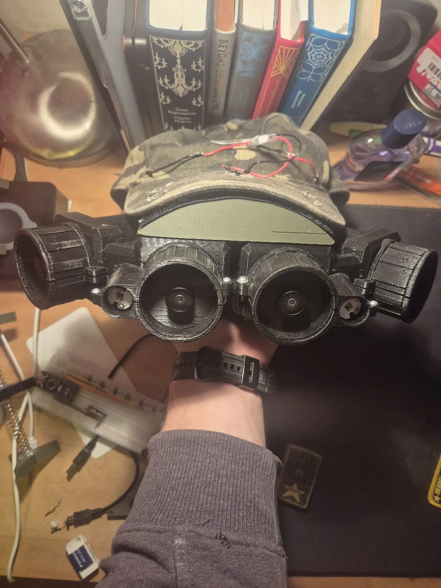

Night Vision System

1 / 4
What I did
- Designed and manufactured a custom housing using SolidWorks and Cura, optimised for compactness and durability.
- Wired and soldered multiple subsystems including drone cameras, lenses, screens and IR floodlights to achieve clear imaging in low light conditions.
- Added connectivity to an FPV drone to demonstrate systems integration and forward‑looking application of technology.
- Overcame challenges in power management, alignment of optics and ensuring stable electronic connections.
- Enhanced soldering and wiring skills as well as troubleshooting under real constraints.
- Produced a working prototype capable of real‑time, low‑latency night vision to validate design choices and technical execution.